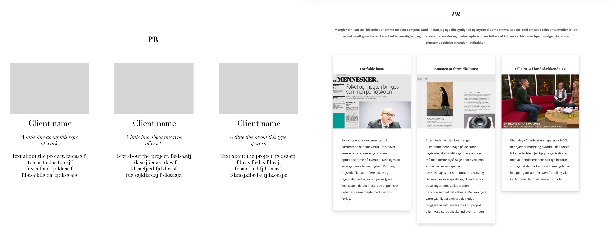

Lyndgaard Media is a Copenhagen based, one woman company. The founder was starting out on her own after years of a successful career in tv and print journalism.
Having an out of date 2 screen business card like website, an entire redesign was needed. It needed to showcase her previous work, as well as explain what she could do, outside of the work she ad already done.
The site needed to showcase successful projects in order to both get new clients, as well as keep existing ones.
There needed to be a website designed, coded and uploaded via a FTP server. It was imperative to work on all screen types.
There was a logo that needed to work with the new site.
Design research for colors, photos, typography and overall feel for the design.
Wireframe created to visualize the foundation of the site. This wireframe was used to write the text for the site.
Upon acceptance of the wireframe I started the design directly with code which made it easy to see how the site was working on different screens in real time. I was able to try different fonts globaly on the site by changing 2 lines of code.
ABOVE: The top photo is a stock found stock photo, used as inspiration for the final image.
I found a stock photo for inspiration and used this to art direct the photographer (see image).
Screen grab from a television newscast plus logos well known companies to add immediate credibility.
Colors Were kept subdued and classic.
Design wise, Stine had a really nice logo in the font Didot which would be used, so I needed to choose fonts that would pair well with it. The fonts to be used, needed to be free.
Typography decisions: The font Georgia is able to be usde for free, and it worked well with the pre-existing logo (in the font Didot). It was paired with a simple sans serif, Open Sans.
With previous work as a magazine designer and art director I learned the art of telling a story. I used this experience to guide Stine in defining her company. Features included:
» Top baner with a new engaging photo of the owner.
» One page site in order to minimise the need for clicks.
» Previous work categorized into 3 types of work.
» Images found from her years of experience.

D. On the left is the wireframe with dummy text. Breakdown of what will go on the site. Used when it was time to write the copy for the site.
» Product Development
» Art Direction
» Design
» Code
» Coding and designing directly in the browser
» Adobe Creatvie Suite »
Bootstrap »
CSS »
FTP Servers »
Git »
HTML »
Google Fonts »
Visual Studio Code
E. On the left is the wireframe with dummy text. This was translated to the final website shown on the right.
» Frontend Development
» Graphic Design
» Rapid Prototyping
» Responsive and Mobile First Code & Design
» Wireframing

Marci Papineau Gottlieb
+45 2447 3457
marcidenmark@me.com